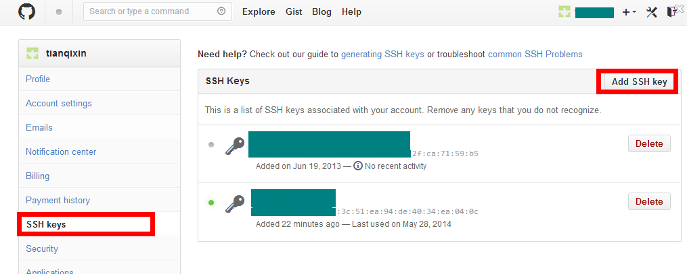
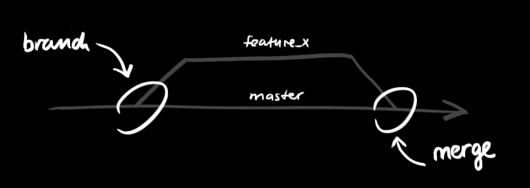

Si eres un Coder, pero no sabes qué es Github, entonces creo que no eres un Coder de nivel novato, porque no eres realmente un Coder, solo eres un transportista de código.
Pero si ya estás leyendo este artículo, creo que ya sabes qué es Github.
Es precisamente Github el que hace realidad la programación social.
¿Qué es Github?
Github es una plataforma de alojamiento de código basada en git. Los usuarios de pago pueden crear repositorios privados; los usuarios gratuitos comunes solo podemos usar repositorios públicos, es decir, el código debe ser público.
Github fue fundado por los tres desarrolladores Chris Wanstrath, PJ Hyett y Tom Preston-Werner en abril de 2008. Hasta ahora cuenta con 59 empleados a tiempo completo y principalmente ofrece servicios de alojamiento de versiones basados en git.
Por ahora, esta aventura de GitHub ha triunfado. Según la descripción de Wikipedia sobre GitHub, podemos ver gráficamente la velocidad de crecimiento de GitHub:

Hoy, GitHub es:
- Una comunidad con 1,43 millones de desarrolladores. Entre ellos no falta el inventor de LinuxTorvaldshackers de primer nivel como él, así como el fundador de RailsDHHjóvenes geeks como él.
- El servicio de alojamiento de código abierto más popular del planeta. Actualmente aloja 4,31 millones de proyectos git. No solo cada vez más proyectos de código abierto conocidos se han mudado a GitHub, como Ruby on Rails, jQuery, Ruby, Erlang/OTP; en los últimos tres años, las librerías de código abierto populares suelen publicarse por primera vez en GitHub, por ejemplo:BootStrap、Node.js、CoffeScriptetc.
- Un sitio web con el puesto 414 en el ranking global de Alexa.
Registrar cuenta y crear repositorio
Para usar GitHub, el primer paso es, por supuesto, registrar una cuenta de GitHub. La dirección del sitio oficial de GitHub:https://github.com/Después de eso puedes crear un repositorio (los usuarios gratuitos solo pueden crear repositorios públicos). Create a New Repository, rellena el nombre y pulsa Create. Luego aparecerá información de configuración del repositorio, que también es un tutorial simple de git.
Instalación de Github
Configurar Git
Primero, crea localmentessh key；
$ ssh-keygen -t rsa -C "your_email@youremail.com"
El siguienteyour_email@youremail.comcámbialo al correo electrónico que registraste en GitHub. Después se te pedirá confirmar la ruta y escribir la contraseña; nosotros usamos las opciones predeterminadas y pulsamos Enter todo el camino. Si tiene éxito, se generará~/en.sshla carpeta, entra en ella, abreid_rsa.pub, copia lakey。
Vuelve a GitHub, entra en Account Settings (Configuración de la cuenta), selecciona SSH Keys en la izquierda, Add SSH Key, el título se rellena como quieras, pega la key generada en tu ordenador.

Para verificar si tuvo éxito, escribe en git bash:
$ ssh -T git@github.com
Si es la primera vez, se te preguntará si continuar; escribe yes y verás: You've successfully authenticated, but GitHub does not provide shell access. Esto indica que te has conectado a GitHub con éxito.
Lo siguiente que tenemos que hacer es subir el repositorio local a GitHub. Antes de eso, también necesitas configurar el nombre de usuario y el correo electrónico, porque GitHub los registra en cada commit.
$ git config --global user.name "your name" $ git config --global user.email "your_email@youremail.com"
Entra en el repositorio que quieres subir, haz clic derecho en git bash, añade la dirección remota:
$ git remote add origin git@github.com:yourName/yourRepo.git
A continuación, yourName y yourRepo representan tu nombre de usuario en GitHub y el repositorio que acabas de crear. Después de añadirlo, entra en .git, abre config; aquí aparecerá una entrada remote "origin", que es la dirección remota que acabas de añadir. También puedes modificar directamente config para configurar la dirección remota.
Crea una nueva carpeta, ábrela y luego ejecuta
git initpara crear un nuevo repositorio git.
Clonar repositorio
Ejecuta el siguiente comando para crear una copia clonada de un repositorio local:
git clone /path/to/repository
Si es un repositorio en un servidor remoto, tu comando se verá así:
git clone username@host:/path/to/repository
Flujo de trabajo
Tu repositorio local está compuesto por tres "árboles" mantenidos por git. El primero es tu工作目录, que contiene los archivos reales; el segundo es暂存区（Index）, que es como un área de caché, guarda temporalmente tus cambios; el último esHEAD, que apunta al resultado de tu último commit.
Puedes proponer cambios (añadirlos al área de preparación) con el siguiente comando:
git add <filename>
git add *
Este es el primer paso del flujo de trabajo básico de git; usa el siguiente comando para realizar el commit de los cambios:
git commit -m "代码提交信息"
Ahora, tus cambios se han confirmado enHEAD, pero aún no están en tu repositorio remoto.

Enviar cambios
Tus cambios ahora están en elHEADdel repositorio local. Ejecuta el siguiente comando para enviar estos cambios al repositorio remoto:
git push origin master
Puedes cambiarmasterpor cualquier rama a la que quieras enviar.
Si aún no has clonado un repositorio existente y quieres conectar tu repositorio a un servidor remoto, puedes usar el siguiente comando para añadirlo:
git remote add origin <server>
Así podrás enviar tus cambios al servidor que hayas añadido.
Ramas
Las ramas se utilizan para aislar el desarrollo de funcionalidades. Cuando creas un repositorio,masteres la rama "por defecto". Desarrolla en otras ramas y, cuando termines, fúndelas con la rama principal.

Crea una rama llamada "feature_x" y cambia a ella:
git checkout -b feature_x
Vuelve a la rama principal:
git checkout master
Luego elimina la rama recién creada:
git branch -d feature_x
A menos que envíes la rama al repositorio remoto, esa rama seráinvisible para los demás.：
git push origin <branch>
Actualizar y fusionar
Para actualizar tu repositorio local a los últimos cambios, ejecuta:
git pull
para, en tu directorio de trabajo,obtener (fetch) 并 fusionar (merge)los cambios del remoto.
Para fusionar otra rama en tu rama actual (por ejemplo, master), ejecuta:
git merge <branch>
En ambos casos, git intentará fusionar los cambios automáticamente. Lamentablemente, esto no siempre funciona y pueden aparecerconflictos (conflicts).conflictos (conflicts)Después de arreglarlos, ejecuta el siguiente comando para marcarlos como fusionados correctamente:
git add <filename>
Antes de fusionar los cambios, puedes usar el siguiente comando para previsualizar las diferencias:
git diff <source_branch> <target_branch>
Etiquetas
Se recomienda crear etiquetas para los lanzamientos de software. Este concepto ya existía, también en SVN. Puedes ejecutar el siguiente comando para crear una etiqueta llamada1.0.0:
git tag 1.0.0 1b2e1d63ff
1b2e1d63ffson los primeros 10 caracteres del ID de commit que quieres etiquetar. Puedes obtener el ID de commit con el siguiente comando:
git log
También puedes usar menos dígitos iniciales del ID de commit, siempre que su referencia sea única.
Reemplazar cambios locales
Si cometes un error de operación (aunque es mejor que esto nunca suceda), puedes usar el siguiente comando para reemplazar los cambios locales:
git checkout -- <filename>
Este comando reemplazará los archivos de tu directorio de trabajo con el último contenido de HEAD. Los cambios ya añadidos al área de preparación y los archivos nuevos no se verán afectados.
Si quieres descartar todos tus cambios y confirmaciones locales, puedes obtener el historial de versiones más reciente desde el servidor y apuntar tu rama principal local a él:
git fetch origin
git reset --hard origin/master
Consejos útiles
git gráfico integrado:
gitk
Salida de git en color:
git config color.ui true
Al mostrar el historial, muestra solo una línea de información por cada commit:
git config format.pretty oneline
Añadir archivos al área de preparación de forma interactiva:
git add -i
Enlaces y recursos
Clientes gráficos
- GitX (L) (OSX, software de código abierto)
- Tower (OSX)
- Source Tree (OSX, gratuito)
- GitHub for Mac (OSX, gratuito)
- GitBox (OSX, App Store)
Guías y manuales
- Libro de referencia de la comunidad de Git
- Git profesional
- Piensa como git
- Ayuda de GitHub
- Git ilustrado
Artículos relacionados
- Guía concisa de Github:http://rogerdudler.github.io/git-guide/index.zh.html
- Cómo aprovechar GitHub de manera eficiente:http://www.yangzhiping.com/tech/github.html
Haz clic para compartir notas
<p style="font-size:14px;">¡Las notas deben ser una extensión del contenido de este artículo!</p><br> <p style="font-size:12px;"><a href="../tougao.html" target="_blank">Para enviar artículos, haz clic aquí</a></p> <p style="font-size:14px;"><a href="./runoob-user-test-intro.html" target="_blank">Cómo obtener el código de invitación de registro</a></p> <h3 class="text-muted"><i class="fa fa-info-circle" aria-hidden="true"></i> ¡Antes de compartir notas, debes <a href=".." class="runoob-pop">iniciar sesión</a>!</h3> <p><a href="./runoob-user-test-intro.html" target="_blank">Cómo obtener el código de invitación de registro</a></p>